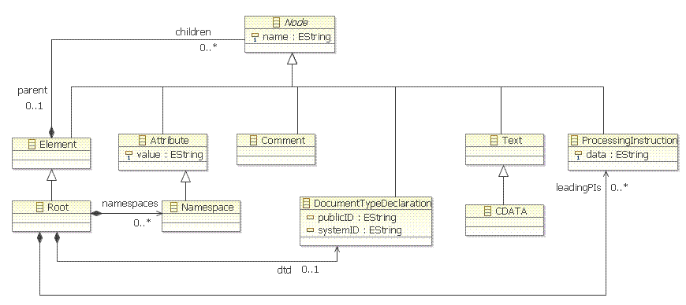

Concepts are described in W3C XML Recommendation (document and logical structures sections). Concepts for Document Types Declarations are not managed here. Note : there is no composite 'ownedAttribute' reference between Element and Attribute type to avoid ambiguous duplicate owning possibilities considering 'chidren' reference.